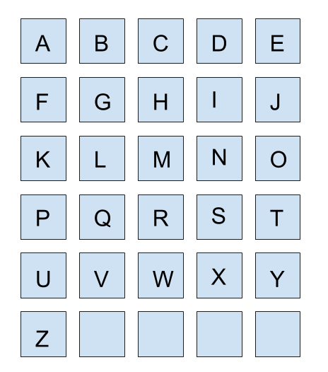

Cvičenie k prednáške Programování I (NMIN101)
Toto je stránka k cvičeniu, ktoré sa koná v zimnom semestri 2018/2019 každý piatok o 12:20 v K11 na Karlíne (Sokolovská 49/83).
Podmienky na zápočet
Na získanie zápočtu je potrebné splniť všetky podmienky:
- získať aspoň 65% bodov z domácich úloh
- musia byť vypracované vlastnoručne
- teda ani nesmú byť "vlastnoručne" kopírované z iných zdrojov (kamaráti, internet,...) :)
- samostatne vypracovať zápočtový program
- úspešne napísať zápočtový test na počítači (organizované prednášajúcim, zapisuje sa do SISu ako na skúšky, 3 pokusy)
Pri udeľovaní zápočtu je aktívna účasť na hodinách výhodou.
Zápočtový program
Vaším programátorským veľdielom pre tento predmet by mal byť nejaký zaujímavý, samostatne vypracovaný program väčšieho rozsahu.
Téma
Keďže je to práca samostatná, nemôžu mať dvaja z vás rovnakú tému. Platí pravidlo - kto si o ňu prv napíše, ten ju má.
Aby ste to pre vás nebolo len ďalšou z povinností, spojte to s niečím, čo vás baví. Vyberte si oblasť, ktorá vám je blízka a vymyslite program, ktorý bude riešiť nejaký problém z tejto oblasti. Pre inšpiráciu ako aj približnú predstavu o náročnosti sa môžete pozrieť tu:
Ak nemáte nápad, môžete si vybrať aj z uvedených programov (prípadne ich nejak modifikovať), ale musíte to konzultovať so mnou. To, že si vyberiete nejaký program z uvedených ešte neznamená, že vám ho určite schválim.
Špecikácia - deadline 11.1.2019
Aby bola Vaša téma uznaná, musíte mi poslať špecifikáciu. Nie je to nič formálne ani rozsiahle - stačí jeden odsek v emaile, kde podrobnejšie popíšete, čo všetko váš program bude robiť. Je to od vás taký sľub, aby sme sa potom nemuseli hádať, či nejaká fičúra mala alebo nemala byť vo vašom programe.
Deadline znamená, že do daného dátumu musí byť vaša špecifikácia schválená! To, že mi nejakú špecifikáciu pošlete neznamená, že je schválená. Ak sa mi to nebude pozdávať, môže sa stať, že si vymeníme niekoľko emailov než sa dohodneme. Nenechávajte si preto posielanie špecifikácie na poslednú chvíľu. Silne doporučujem, aby ste mi ju poslali už pred vianočnými prázdninami a mohli tak využiť prípadný voľný čas, aby ste na zápočťáku začali pracovať. Zároveň silne doporučujem skúsiť si naprogramovať zápočťák už pred zápočtovým testom. Sú na neho len 3 pokusy - každá predchádzajúca programátorská skúsenosť sa môže hodiť!
Kód
Po Vašom kóde chcem hlavne:
- funkčnosť
- nepadá
- hlási prívetivé hlášky pre chybný vstup
- správne robí, čo sľubovala špecifikácia
- prehľadnosť
- členený do funkcií/procedúr
- zmysluplné názvy premenných a funkcií
- komentáre
- príklady vstupov - ak to povaha úlohy požaduje
Dokumentácia
Popis fungovania programu vo formáte pdf. Má 2 časti:
- užívateľská - návod na použitie pre laika. Ak ho ukážete Vašej babičke, zvládne si Váš program veľmi jednoducho vyskúšať.
- programátorská - popis, ako je váš program implementovaný a prečo ste zvolili práve tento algoritmus/formát vstupu, popr. nad akými inými postupmi ste uvažovali. Pre inšpiráciu si môžete prečítať návod od RNDr. Rudolf Kryla.
Predvedenie - deadline 15.4.2019
Program je nutné osobne predviesť, pri objavení prípadných nedostatkov tiež opraviť. Pred predvedením mi musíte poslať kód aj dokumentáciu. Termín si so mnou dohodnite emailom. Ak to nestihnete do konca zimného skúškového, kredity vám budú započítané do letného semestru.
Konzultácie
Keby vám čokoľvek nebolo jasné, či už v zadaní domácich úloh, prednáškach alebo cvičeniach, určite sa nebojte a napíšte mi mail čím skôr. Na jednoduché otázky sa budem snažiť odpovedať v pracovnom týždni do 24 hodín. Pri väčších problém si neváhajte dohodnúť konzultáciu. Ideálny čas pre mňa je v piatok pred cvičením alebo hoďku dve po ňom, iné dni po dohode väčšinou na Malej Strane (prípadne na koleji 17.listopadu).
Prostredie
Na vyúčbu programovania budeme používať Pascal (a bude v ňom zápočtový test aj zápočtový program). Z vývojových prostredí bude na školských počítačoch dostupný Lazarus, Turbo Pascal a FreePascal. Na cvičení budem používať Lazarus. Nainštalovať si ho môžete odtiaľto. Domáce úlohy budú zadavané a odovzdávané do ReCodexu.
Viac o častých chybách pri odovzdávaní do ReCodexu si môžete pozrieť na stránke Petra Poláka.
Zoznam chýb, ktoré môže ReCodex hlásiť a ich popis, si môžete pozrieť tu.
Tipy
Pár tipov, ktoré by vám mohli pomôcť keď sa zaseknete, alebo sa tomu snažiť predchádzať:- rozumne pomenovávať premenné
- nebojte sa dlhých názvov
- ctrl + medzerník
- názov má vystihovať úlohu premennej
- keď program nerobí čo má - prečo robí to čo robí?
- testovať po malých kúskoch
- komentovať
- hlavne vtedy, keď napíšete kúsok kódu na ktorý ste ultra hrdí - pravdepodobne je to preto, že je tak zložitý, že zajtra sa v ňom už nevyznáte
- formátovanie ctrl + D
- "Kopírování je častý zdroj chyb" (credit: RNDr. Tomáš Holan, Ph.D.)
- po pridaní zkopírovanú časť radšej odtestovať
- nezabudnúť premenovať čo treba (ctrl+R)
- debugovať
- keď už ste všetko vyskúšali a stále nič, napíšte mi a skúsim vás nakopnúť správnym smerom
Obsahy cvičení
5.10.2018
Suploval Martin Dvořák. Riešili sa úlohy bez použitia počítača - konkrétne šachovnica, čokoláda, deliteľnosť a velbloud. Neformálny úvod do vyčísliteľnosti.
12.10.2018
Suploval Martin Dvořák. Jednoduché úlohy na vstup, výstup, číselné datové typy a aritmetické operácie. Bližší pohľad ako sú desatinné čísla uložené v počítači, aritmetické pretečenie a dôkaz periodického rozvoja 0.3 v binárnom zápise.
Domáca úloha (deadline do ďalšieho cvičenia)
Načítajte zo vstupu dĺžky strán kvádru a spočítajte a vypíšte objem a povrch kvádru. Kód programu mi pošlite emailom ako textový súbor.
19.10.2018
Robili sme úlohy na vnorené IF podmienky a cykly WHILE a FOR.
Domáca úloha (deadline večer pred ďalším cvičením)
Zadanie aj odovzdávanie je v ReCodexe. Kto ešte nie ste, prihláste sa tam do mojej skupiny v záložke "SIS - Integrace".
26.10.2018
Opakovali sme cykly. Skúsili sme programovať využívajúc programy, ktoré už máme hotové a tak ľahšie dôjsť k zložitejšej úlohe cez jednoduchšie problémy. Urobili sme jednoduchú úlohu na pole. Úlohy:
* Rozcvička - Hádaj na čo myslím...
Napíšte hru, kde si počítač bude "myslieť" číslo a užívateľ ho bude hádať. Počítač sa spýta užívateľa na jeho tip a odpovie "Moje číslo je menšie"/"Moje číslo je väčšie"/"Trafil si!". Užívateľ potom môže znovu zadať svoj ďalší tip a tak dookola až kým číslo neuhádne.
* Faktoriál
Napíšte program, ktorý pre zadané N spočíta faktoriál.
* Kombinačné číslo
Napíšte program, ktorý pre zadané N a K spočíta kombinačné číslo.
** Pascalov trojuholník v Pascale
Napíšte program, ktorý pre zadanú hĺbku H vypíše Pascalov trojuholník.
* Malá násobilka
Napíšte program, ktorý pre zadané N vypíše tabuľku malej násobilky.
* Palindróm
Napíšte program, ktorý na vstupe dostane 5 znakov oddelených medzerou a na výstup ich vypíše 2x aby vytvorili palindróm.
Domáca úloha (deadline štvrtok 1.11. 23:59)
Dneska máme v ReCodexe zadané dve úlohy: Součet řady - liché (5 bodov) a Rozklad na prvočinitele (8 bodov - deadline až 8.11. o 23:59)
2.11.2018
Vysvetlili sme si debugovanie. Ukázala som zastavenie na breakpointe, krokovanie po riadkoch a sledovanie hodnôt premenných. Urobili sme 1 zložitú úlohu na cykly. Skúšali sme sa viac hrať s poľami.
** Cik-cak
Vytvorte program, ktorý bude vypisovať vertikálny cik-cak vzor. Na začiatku ako vstup načíta prirodzené číslo, ktoré bude určovať šírku vzoru. Následne po stlačení tlačidla Enter vypíše jeden riadok o zadanej šírke so znakom ‘*’ úplne vľavo. Po ďalšom stlačení už bude ‘*’ posunuté o jeden znak vpravo, atď. Keď ‘*’ dôjde na pravý okraj, začne vracať doľava a tak dookola. Pri konštantnom držaní Enteru sa potom pred vami bude kresliť krásny cik-cak.
Pro-tip: Miesto ‘*’ skúste vypisovať ‘\’ pri ceste vpravo a ‘/’ pri ceste vľavo -> výsledok bude ešte o niečo krajší :)
* Merge
Napíšte program, ktorý na vstupe dostane na dvoch riadkoch dve rôzne 10-tice celých čísel oddelených medzerami (každá usporiadaná od najmenšieho po najväčšie) a na výstup vypíše pole, ktoré vzniklo spojením týchto dvoch tiež tak, aby bolo usporiadané od najmenšieho.
Simulácia operácie merge{kind=link}
Domáca úloha (deadline štvrtok 8.11. 23:59)
V ReCodexe je zadaná úloha Nejdelší rostoucí podposloupnost - bude za 6 bodov.
9.11.2018
Precvičovali sme ďalšie úlohy na polia. Ukázali sme si pár tipov a rád, ako lepšie programovať. Ukázali sme si pár užitočných skratiek v Lazaruse.
* Párne vs nepárne
Na vstupe dostanete 50 prvkov a vašou úlohou je vypísať zvlášť na jednom riadku všetky párne (sudé) a na ďalšom všetky nepárne (liché).
Príklad vstupu:
46 4 58 56 68 84 60 2 21 14 6 16 69 99 29 14 37 27 100 89 76 64 99 3
89 98 51 57 98 11 33 7 56 74 8 27 59 52 71 63 99 79 89 75 90 31 84 57 1 45
* Frekvencia
Na vstupe dostanete postupnosť čísel (oddelených medzerou, menej ako 100 čísel) ukončenú nulou. Vašou úlohou je spočítať, koľko krát sa každé číslo na vstupe opakuje. Na výstup vypíšte na jednotlivé riadky jednotlivé čísla s ich četnosťou.
* Suma v postupnosti
Na vstup dostanete číslo N a 10-prvkovú postupnosť. Vašou úlohou je zistiť, či sa číslo N dá vytvoriť ako súčet dvoch čísel z postupnosti. Na výstup vypíšete buď dvojicu čísel, ktorej súčet je N, alebo že taká dvojica neexistuje.
** Caesarova šifra
Napíšte program, ktorý načíta číslo N a text ukončený bodkou (do 10000 znakov), a vypíše daný text zašifrovaný
Caesarovou šifrou o N pozícií (pozor, N môže byť aj záporné!). Caesarova šifra robí to, že každé
písmenko nahradí písmenkom, ktoré je od neho v abecede o N pozícií ďalej (ak to pretečie, ide sa znovu od začiatku abecedy).
Ako sme si už spomínali, písmenká sú v počítači uložené pod nejakým číslom, ktoré vieme zistiť funkciou
ord(cislo)
a písmená od 'a' po 'z' sú očíslované za sebou idúcimi číslami. Číselnú hodnotu na písmeno prevedieme funkciou chr(cislo).
Stačí prevádzať malé písmenká abecedy.
Na odtestovanie správneho fungovania programu môžete použiť napr. túto stránku.
*** Minipexeso
Napíšte si program, ktorý bude simulovať hru pexesa. Bude mať 10 kartičiek, vždy po dve z písmenok {a,b,c,d,e}. Kartičky treba na začiatku zamiešať (Použite funkciu Radomize a Random(10)). Program potom na obrazovku vypíše čísla od 1 do 10 symbolizujúce kartičky pexesa. Spýta sa užívateľa, ktoré dve kartičky chce otočiť. V ďalšom kroku algoritmus znova vypíše 10 kartičiek, ale namiesto čísel zvolených kartičiek ukáže ich hodnotu (písmenko). Užívateľ môže znovu otočiť dve kartičky. Pri ďalšom výpise kartičiek sa prvá dvojica otočených kartičiek ale znovu zakryje (pokiaľ sa samozrejme písmenká nezhodovali). Keď budú všetky kartičky otočené (teda všetky dvojice odhalené) hra zagratuluje užívateľovi a skončí :)
Tip: Aby užívateľ nemohol podvádzať a pozerať na kartičky čo otáčal o pár riadkov vyššie,
pridajte si úplne hore (hneď pod program project1;) knižnicu
uses crt;
Potom budete môcť v kóde zavolať funkciu ClrScr, ktorá vymaže všetko, čo ste do konzole zatiaľ napísali.
Domáca úloha (deadline štvrtok 15.11. 23:59)
V ReCodexe je zadaná úloha Maximum v posloupnosti - bude za 8 bodov.
16.11.2018
Ukázali si ako si rozvrhnúť program na funkcie a procedúry. Na úlohách sme si precvičili dvojrozmerné polia a booleany a snažili sme sa pritom využívať funkcie.
* Symetrické číslo (používať funkcie!)
Napíšte program, ktorý bude dostávať na vstupe čísla, a pre každé vyhodnotí, či je symetrické. Skúste dodatočne ošetriť, aby program ignoroval nuly na začiatku čísla.
* Transpozícia
Na vstupe dostanete maticu NxN (N si môžete zvoliť pevné). Vypíšte túto maticu transponovanú.
* Diagonála
Na vstupe dostanete maticu NxN (N si môžete zvoliť pevné). Vašou úlohou je určiť, či je symetrická podľa hlavnej diagonály.
* Vedľajšia diagonála
Skúste overiť symetriu podľa vedľajšej diagonály.
* Zvislá os
Skúste overiť symetriu podľa zvislej (vertikálnej) osi prechádzajúcej stredom matice.
** Permutácie v stĺpci
Na vstupe bude číslo N a za ním matica NxN. Vypíšte počet stĺpcov matice, ktoré sú nejakou permutáciou čísel 1 až N (teda je tam každé z týchto čísel práve raz a v ľubovoľnom poradí).
*** Piškvorky
Skúste si v konzoli naprogramovať piškvorky. Sami zvažte a navrhnite rozhranie - ako budú hráči zadávať svoje ťahy. Po každom ťahu skontrolujte, či pridaný znak nie je tretí v riadku, stĺpci či diagonále a oznámte prípadné víťazstvo.
Domáca úloha (deadline štvrtok 22.11. 23:59)
V ReCodexe je zadaná úloha Piškvorky 5x5 - bude za 12 bodov.
23.11.2018
Pridali sme si pár postrehov, aby sme lepšie používali funkcie. Cvičili sme úlohy hlavne na chary a stringy. Krátko sme zhrnuli časovú zložitosť algoritmu.
* Odzadu
Napíšte program, ktorý pri zadaní riadku (do 255 znakov) ho na výstup vypíše odzadu.
* ROT13
Naprogramujte šifru ROT13. Na vstupe bude text (tzn. aj iné znaky než len písmenká, ale zmestí sa do stringu). Na výstup vypíšte zašifrovaný text. Správnosť zašifrovania si môžete overiť napr. TU.
* Štvorcová klávesnica
Máte klávesnicu, v ktorej sú písmená usporiadané do štvorca nasledovne:
Táto klávesnica má písaciu hlavu, ktorá sa vie pohybovať nad klávesnicou iba hore/dole, vpravo/vľavo. Keď dôjde nad požadované písmeno, vypíše ho. Na začiatku je hlava nad písmenom A. Napíšte program, ktorý pre zadané slovo spočíta, koľko minimálne krokov musí hlava vykonať, aby ho pomocou svojej klávesnice vypísala. Akú zložitosť má vaše riešenie?
* Šibenica
Skúste si naprogramovať hru šibenice. Na začiatku užívateľ zadá (alebo vy defaultne nastvíte, ako chcete)
slovo, ktoré sa bude hádať. Program potom vypíše podčiarkovník miesto každého písmena slova. Užívateľ
zadá písmeno, ktoré si myslí, že v tom slove bude. Ak tam skutočne bolo, nabudúce sa už namiesto podčiarkovníka
vypíše dané písmeno, a tak dookola, kým na neodhalí celé slovo. Zariaďte, aby program nerozlišoval
malé a veľké písmená (hodí sa funcia UpCase z prednášky). Na vymazanie obrazovky sa zas
hodí ClrScr (z knižnice crt);
*** Matica na N-tú
Skúste si naprogramovať mocnenie matice na N-tú. Dokážete to aj v čase O(logN)? Pár užitočných rád ste mali na prenáške ;)
Domáca úloha (deadline štvrtok 29.11. 23:59)
V ReCodexe je zadaná úloha Sústavy - bude za 10 bodov. Na získanie bodov je povinné použiť funkcie! Riešenie bez jedinej funkcie bude hodnotené nulou. Riešenie s nesprávnym použitím funkcie (použitie globálnych premenných namiesto parametrov funkcie) bude hodnotené polovicou.
30.11.2018
Uvedieme si všetky podrobnosti k zápočtovému programu. Urobíme si úlohy zamerané na súbory. Zopakujeme triediace algoritmy.
* Všetko na výstup!
Napíšte program, ktorý vypíše celý obsah súboru vstup.txt na štandardný výstup.
* Po písmenku
Napíšte program, ktorý vypíše každé písmeno zo súboru vstup.txt na zvláštny riadok.
* 10 riadkov
Napíšte program, prečíta vstup zo súboru A.txt a skopíruje prvých 10 riadkov do súboru B.txt. Ak na vstupe nie je 10 riadkov, skopíruje iba tie, ktoré tam sú.
Domáca úloha (deadline štvrtok 6.12. 23:59)
V ReCodexe je zadaná úloha Sústavy - bude za 10 bodov. Na získanie bodov je povinné použiť funkcie! Riešenie bez jedinej funkcie bude hodnotené nulou. Riešenie s nesprávnym použitím funkcie (použitie globálnych premenných namiesto parametrov funkcie) bude hodnotené polovicou.